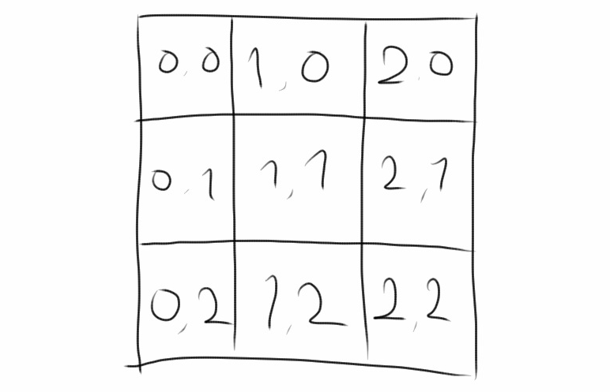
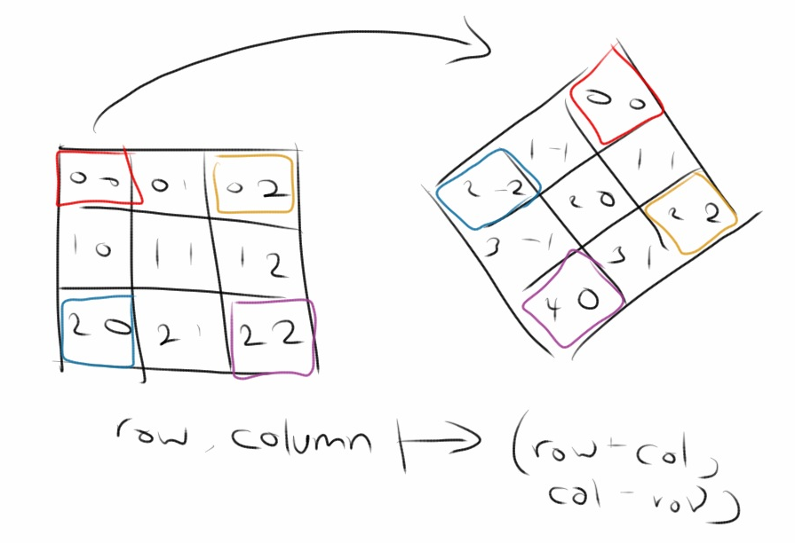

I have discovered more than once in recent free-time projects, that
exploiting symmetry
can help make code much simpler to write and understand. In fact, it makes
some problems feel tractable, when at first they felt as though a complicated
"brute force" technique was needed.
I'll give some examples of where simply adjusting coordinate systems
made my problems much easier to understand and solve.
By changing to the right coordinate system,
symmetries
in the problem can become more apparent.
Hexagons
One project I have been working on in my spare time is a digital instrument
that uses the Lattice Boltzmann Method to simulate fluids. In it, I have
fill the screen with hexagons (2DQ7), where each hexagon simulates how pressure
waves move through a two dimensional surface. Thus, the problem arises:
“In what structure store the hexagons, how would I map hexagon indices
to screen positions, and how do I find neighboring hexagons?”
When I started the project, I approached these question the same way I would
a lattice of squares (2DQ9). Working with pixels much longer than I have
hexels, it was difficult to start from
first principles.
The nice thing with a lattice of squares / screen of pixels is that a 2D array
maps directly onto it in a reasonably straight-forward manner. In fact, it can
be as simple as directly translating array index to pixel position.

I attempted to do a similar mapping with hexagons, and it “worked,” but
I went through many iterations and errors as I walked through the different cases for
drawing and finding neighbors. Doing things this way, I was shoving a hexagonal peg
into a square hole.

Doing this was frustrating in two ways. The first is that I could draw such a numbering by
hand easily enough, but it took many wrong implementations translating the procedure to
code. The drawing code for even rows and that for odd rows ends up being very different
from each other. Second, even once the code was implemented correctly, it felt wrong
to be doing things this way. After all, a hexagon in an even row looks exactly the same
as a hexagon in an odd row. The code should reflect this symmetry. My code reaked of
code smell.
Ideally, we can find a mapping where hexagons are treated more symmetrically. That is,
the mapping from 2D array index to screen position should be linear. Meaning, it should
be a simple addition and multiplication. There should be no difference in even versus odd
rows or any other unnecessary distinction between the different hexagons.
In this light, we see that our choice to attempt to fit the x and y directions at 90 degrees
is a poor fit for a lattice of hexagons. Instead, we should choose an x and y direction (the
basis in linear-algebra-speak)

Choosing an x and y direction not 90 degrees apart may look strange, but to do so when
drawing a grid of hexagons will cause more pain that needed. Had I looked at the problem
this way from the beginning it would have saved me at least four iterations of bug fixing,
finding missing cases in drawing code and neighbor finding code.

Queens
Looking at symmetries in coordinate systems is also helpful when looking at the
n queens problem.
The first part of this is to specify what exactly it means for a set of queens
to be attacking each other. Queens are said to be attacking each other if they
lie in the same row, column, or diagonal.

Can we translate the notion of queens attacking each other into mathematics?
If we are given a set of queens as (row, column) positions, can we determine
if any are attacking each other?
Let's start with the rows. If more than one queen shares a row, then these
queens are said to be attacking each other along that row. So, looping through
all the row coordinates of the queens and finding the existence of duplicates
(with a hash set, by sorting, or whatever other method you'd like to find duplicates)
is equivalent to finding out if the queens are attacking along some row. The
same argument applies to finding queens attacking along some column.
Is there a simple way to find queens attacking along the diagonals? Would it
work in the same way as the rows and columns. It feels as though the problem
and solution should be symmetric. We are just finding if the queens lie along
a certain line in the row, column, and diagonals cases, after all.

Just as with the hexagons problem, with a change of coordinates
(in this case, by rotating 45 degrees and scaling), what we at first thought
was difficult now looks easy. By converting the queens' (row, column) coordinates
to (row + column, column - row) coordinates, what we have really done
is convert the queens' coordinates to (south-east diagonal, south-west diagonal)
form.
With this new set of coordinates in hand, we can use the exact same duplicating
finding method as we did with rows and columns to determine if queens are attacking
along one of the diagonals.
Conclusion
Changing coordinates can highlight valuable symmetries when solving programming
can both prevent bugs and make problems tractable. Finding
symmetry is a very important step.
By taking the time to find symmetries in the problems I've encountered in my
side projects, I could have saved myself from a lot of debugging time.